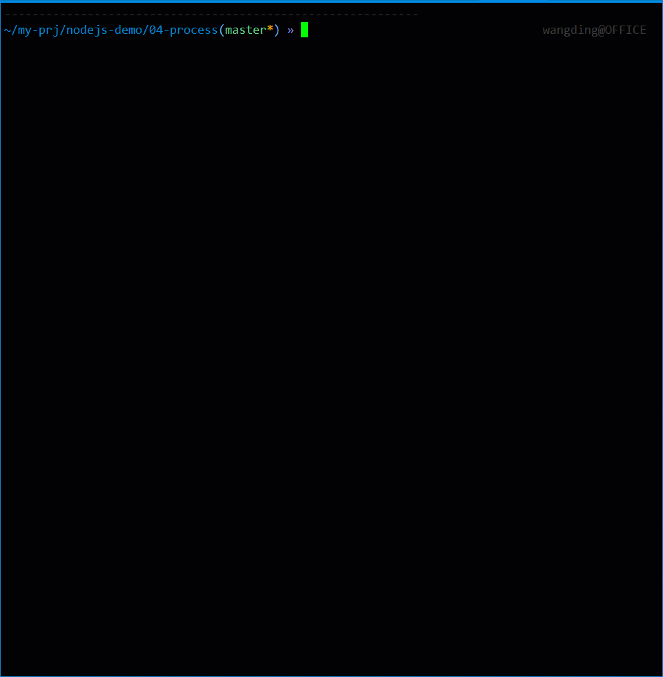

第 16 课：综合案例
1. 信源熵计算
要求：
- 创建 entropy 仓库
- 编写命令行脚本程序，完成信源熵的计算
- 信源熵的计算公式：
H(p) = -p1*log(p1, 2) - p2*log(p2, 2) - ... - pn*log(pn, 2) - p1, p2, ..., pn 都是概率，其中，
0 <= pi <= 1 and p1 + p2 + ... + pn = 1 - 要求支持命令行参数输入概率
- 命令行参数输入概率要支持两种形式：逗号分隔和空格分隔
- 命令行参数输入形式不能混合，即：同时用逗号和空格分隔，视为错误输入
- 无命令行参数或者命令行参数不正确时，可以交互输入概率
- 要求对输入概率进行数据合法性验证
- 数据非法时，要有明确的错误提示信息
- 对程序中的通用模块进行封装
- 对程序中的通用模块用 Mocha 做单元测试，用 Istanbul 做代码覆盖率测试
- 命令行程序的交互效果，请参考下面的屏幕截图： 